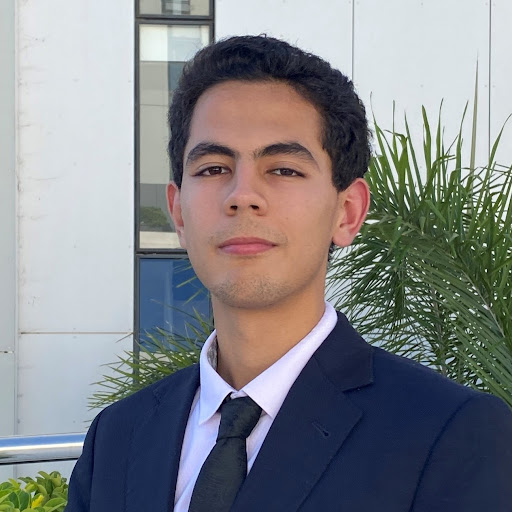

Mehdi Bahlaoui
Biography
Articles
Read
View source
View history
Tools


Mehdi Bahlaoui
Engineering Student

Mehdi in 2022
Born
April 13, 2003 (age 22)
Marrakesh, Morocco
Citizenship
Moroccan
Political party
Independent
Parents
Bahlaoui family
Signature
<Not yet set>
Mehdi's voice
Not specified
For other uses, see Mehdi Bahlaoui (disambiguation).
Mehdi Bahlaoui (مهدي بهلاوي)
( /ˈmeh.di/ mɛh.di;
born April 13, 2003) is a Moroccan
engineering student
and emerging leader in the fields of robotics, embedded systems, and artificial intelligence.
He is currently pursuing a degree in electrical and electronics engineering at
the National
School of Arts and Crafts (ENSAM) in Rabat.
Early Life
Mehdi Bahlaoui was born on April 13, 2003, in Marrakesh, Morocco.
He grew up in a family that valued education and hard work, which instilled in him a strong sense of curiosity and a desire to learn from an
early age.
His parents encouraged him to explore various interests, including technology and engineering,
which would later shape his career path.
Growing up, and like all children of his age, Mehdi fell in love with a game and played it nonstop. He knew every corner of it. Eventually, he turned that obsession into a YouTube channel, just to see where it could go.
It grew faster than expected: over 600 loyal followers, 20,000+ views, and a small community that actually listened.
But he never saw himself as a gaming YouTuber long-term. He quit while it was still rising, because he got bored eventually.
Through it, he learned how to edit, how to talk to an audience, how to build and hold attention. Skills that would later feed into his music, storytelling, and everything else that followed.
Rap Career
Even before highschool, Mehdi was music—driven by the urge to replicate the tracks he heard while playing his favorite game, Geometry Dash. He started making simple beats with a program called LMMS, then leveled up to FL Studio. In high school, he sampled friends' audios, rapped for fun, and dropped cringy verses about girls.. experimenting.But the turning point came when he met his producer friend Faris. Faris shared the same raw passion for music, and for the first time, Mehdi felt like he had found someone equally talented. Their connection wasn’t soft—it was competitive. Mehdi invited Faris into his world through countless diss tracks, challenging him, pushing him.
His lyrics appeared to cut through the surface and exposed the tension between students and the system—without ever trying to be political. Almost all of his songs came from an accidental beat, thrown together without intention but executed with instinct.
They came raw, fast, and honest. People listened because it felt real—and because no one else had the balls to say it how it was.
Philosophy Endevour